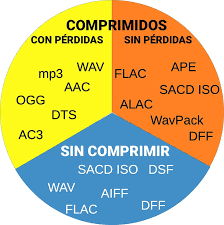
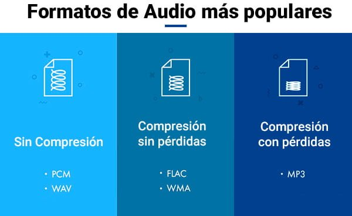

FORMATOS DE AUDIO SIN PERDIDA
¿Qué son?

Los formatos de audio sin pérdida, conocidos en inglés como lossless, son un tipo de archivo digital que utiliza algoritmos de compresión diseñados para conservar absolutamente todos los datos de audio de la fuente original. Su principal característica es que garantizan la máxima fidelidad de sonido posible, ya que el archivo resultante es una réplica digital idéntica al archivo maestro de estudio (por ejemplo, con calidad de CD o superior). Esto los diferencia de los formatos "con pérdida" (como MP3), que eliminan selectivamente información de audio considerada inaudible para reducir drásticamente el tamaño del archivo.
La clave de los formatos sin pérdida reside en su compresión reversible. Aunque estos archivos pasan por un proceso de compresión para ocupar menos espacio que el audio sin comprimir, este proceso es matemáticamente perfecto. Al descomprimir el archivo para su reproducción, se recupera el 100% de la información original sin que se pierda un solo bit de datos de audio. Por este motivo, los archivos sin pérdida son significativamente más grandes que sus equivalentes con pérdida, pero son el estándar de oro para los audiófilos y para la preservación musical.
Existen varios formatos sin pérdida populares. Los ejemplos más comunes de formatos comprimidos sin pérdida son FLAC (Free Lossless Audio Codec), que es el más utilizado y de código abierto, y ALAC (Apple Lossless Audio Codec), que es el estándar de Apple. También existen formatos sin comprimir que por definición son sin pérdida, como WAV y AIFF, que simplemente almacenan la información de audio tal como fue grabada sin aplicar ninguna reducción de tamaño.
Etapas y Funcionamiento de la Compresión Sin Pérdida
Etapa de Captura (Fuente)
Definición de la Fuente:
El proceso comienza con una fuente de audio digital de alta calidad, generalmente PCM (Modulación por Impulsos Codificados). Esta es la representación digital pura de la onda sonora, a menudo capturada a tasas de muestreo y profundidad de bits altas (por ejemplo, 44.1 kHz/16-bit o 96 kHz/24-bit).
Archivos Base: Los archivos WAV (en PC) y AIFF (en Mac) son los contenedores comunes para el audio PCM sin comprimir.
Etapa de Análisis y Predicción (Compresión)
Identificación de Redundancia:
El códec sin pérdida (como FLAC o ALAC) analiza la secuencia de datos PCM. Busca patrones repetitivos, silencios y redundancias en los datos.
Codificación de Predicción:
El códec no almacena cada muestra de audio individualmente. En su lugar, predice el valor de la siguiente muestra basándose en las anteriores. Luego, almacena el error o la diferencia entre la predicción y el valor real. Este "error" es mucho más fácil de codificar y ocupa menos espacio que la muestra completa.
Etapa de Empaquetado y Codificación
Codificación de Longitud Variable (Huffman/Rice):
Una vez que el códec ha calculado las diferencias (los datos a almacenar), utiliza técnicas de codificación eficiente (como la Codificación de Huffman o de Rice) para asignar códigos cortos a los patrones que ocurren con frecuencia y códigos más largos a los patrones menos frecuentes.
Creación del Contenedor:
Los datos comprimidos se colocan en un archivo contenedor (por ejemplo, .flac o .m4a para ALAC), junto con metadatos (artista, título, etc.). El resultado es un archivo más pequeño que el WAV o AIFF original, pero que contiene toda la información.
Etapa de Reproducción (Descompresión)
Descodificación:
Cuando el usuario reproduce el archivo, el reproductor aplica el proceso inverso. Utiliza la tabla de códigos para expandir los datos y reconstruir las diferencias.
Reconstrucción PCM:
El reproductor utiliza los valores de predicción y las diferencias almacenadas para calcular y reconstruir perfectamente cada muestra original de PCM. El flujo de datos PCM resultante es idéntico al del archivo fuente original, garantizando la calidad sin pérdida.
Aplicaciones de los Formatos de Audio Sin Pérdida (Lossless)
Definición: Archivos que conservan el 100% de los datos del audio original.
Fidelidad: Proporcionan una calidad de sonido idéntica a la fuente (calidad CD o superior).
Compresión: Utilizan compresión reversible; reducen el tamaño sin descartar información.
Archivos: Son más grandes que los formatos con pérdida (MP3) debido a la retención de datos.
